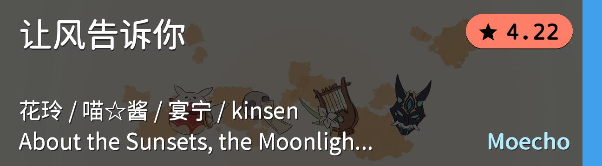
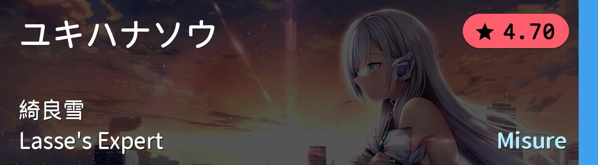
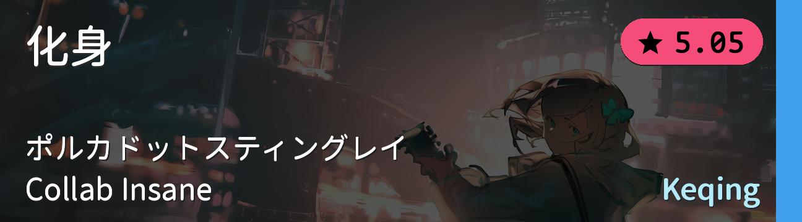
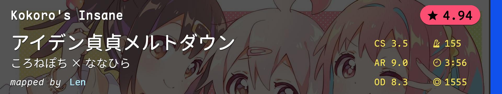
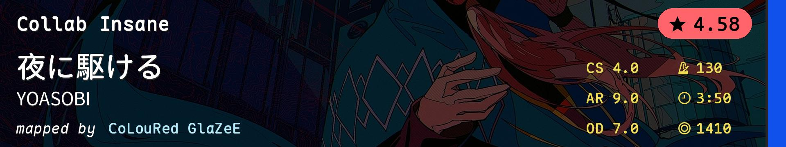
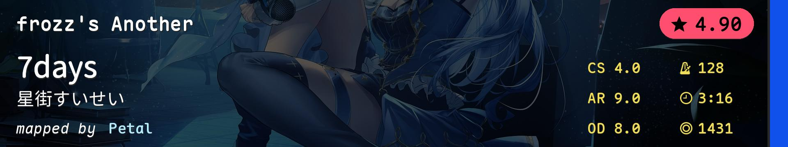
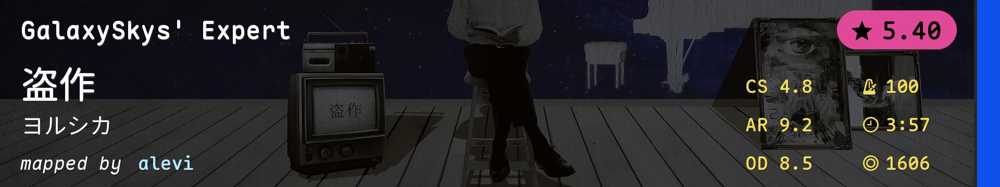
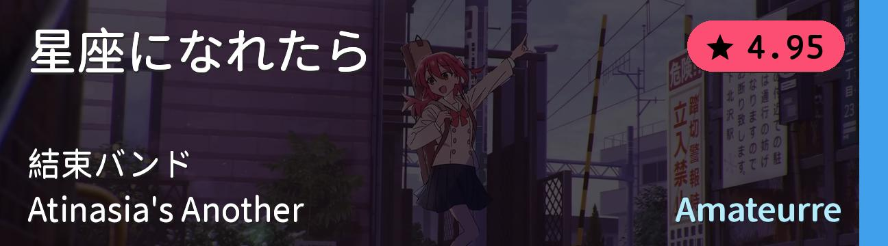
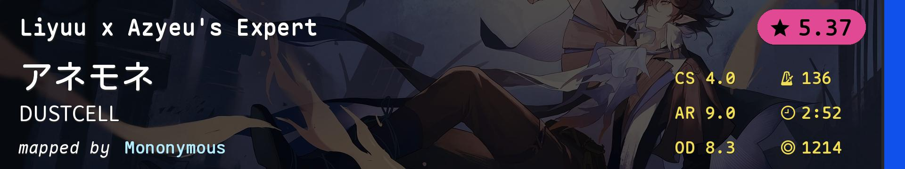

| # | BID | Beatmap Info | Mods | Notes |
|---|---|---|---|---|
| 1 | 2849349 |  | NM | 简单难度1级 手控跳切 |
| 2 | 4043672 |  | NM | 简单难度2级 aim control |
| 3 | 3257225 |  | NM | 简单难度3级 强双切 |
| 4 | 4077793 |  | NM | 普通难度1级 手控串 |
| 5 | 2538199 |  | NM | 普通难度2级 经典手控图 |
| 6 | 4149605 |  | NM | 普通难度3级 alt小跳 |
| 7 | 3735247 | NM | 普通难度4级 左右手一起控 |
|
| 8 | 3777002 |  | NM | 困难难度1级 附点aim |
| 9 | 4056255 |  | NM | 困难难度2级 低AR、间距串、分离串、耐力 |
| 10 | 4035737 |  | NM | 困难难度3级 alt综合 |